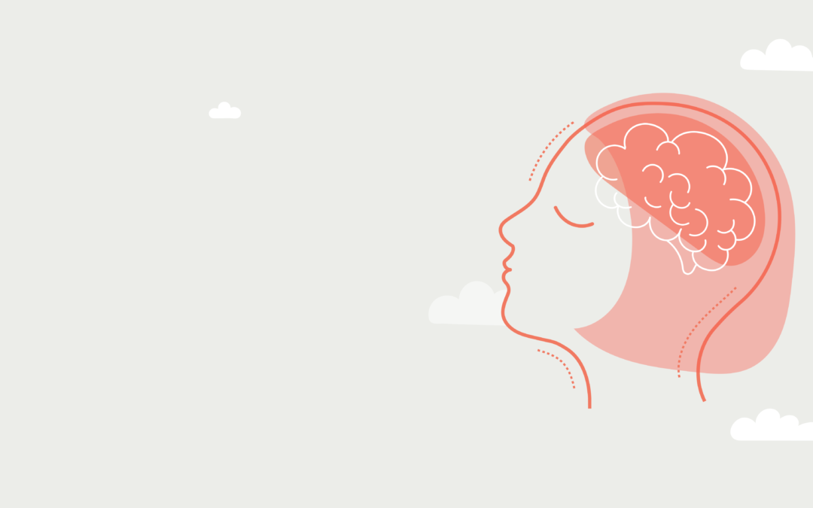
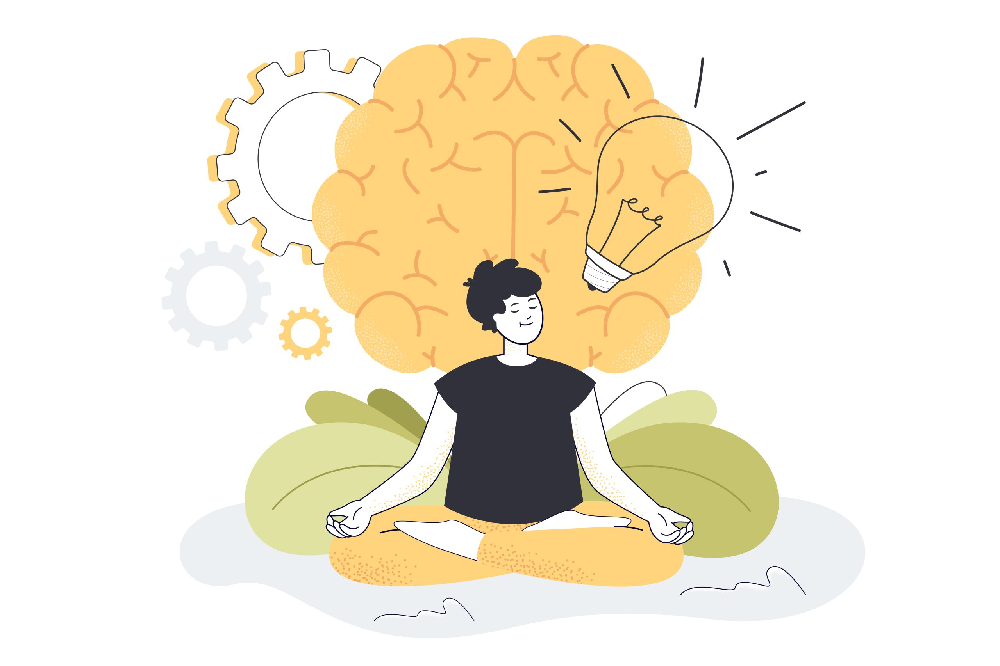

Discover small daily habits that can greatly improve your mental well-being.
..
Mental health isn't just about avoiding illness—it's about cultivating resilience, peace, and positivity in everyday life.
Here are some science-backed practices you can start today:
🌞 1. Morning Light Exposure
🧘 2. Micro-Mindfulness
📓 3. Gratitude Journaling
🤸 4. Movement Snacks
📵 5. Digital Sunset
The Science Behind Meditation

Explore how meditation can rewire your brain and reduce stress.
Meditation isn't just a spiritual practice—it's a scientifically proven method to rewire your brain, reduce stress, and improve emotional regulation. Let's explore what makes meditation such a powerful tool for mental health: Read More
Overcoming Anxiety: A Step-by-Step Guide
Practical strategies to help manage and overcome anxiety.
Meditation isn’t just a spiritual practice—it’s a science-backed method to enhance mental clarity, emotional balance, and stress resilience. Neuroscience shows that consistent meditation can reshape the brain in powerful ways.
🧠 Changes in Brain Structure
Studies using MRI scans reveal that meditation increases gray matter in areas like the hippocampus (linked to memory and learning) and decreases activity in the amygdala, the center of fear and anxiety.
😌 Reduced Stress and Cortisol
Regular mindfulness meditation significantly lowers cortisol, the stress hormone. This leads to improved mood, better sleep, and even lower blood pressure.
🎯 Better Focus and Attention
Just 10–15 minutes of daily meditation can enhance your attention span and ability to concentrate by strengthening the brain’s prefrontal cortex.
🧘 Emotional Regulation
Meditators often report feeling more emotionally balanced. Scientific studies confirm this, showing reduced reactivity to negative stimuli and improved emotional control.

Overcoming Anxiety: A Step-by-Step Guide
Anxiety can feel like a swirling storm cloud overhead—persistent, heavy, and unpredictable. But with the right tools, you can clear the skies and reclaim your calm. This guide will help you transform anxious energy into grounded confidence.
🔍 Unravel the Roots
Behind every anxious thought is a story. Trace it gently. Is it fear of failure? The pressure to be perfect? Reflection through journaling or talking with a trusted guide can reveal the origin of your worry and help you take back the narrative.
🌿 Anchor Yourself in the Now
When your mind races ahead, grounding practices gently pull you back to the present. Try the 5-4-3-2-1 technique: See 5 things, touch 4, hear 3, smell 2, taste 1. Breathe deep—let the world remind you that you’re safe here and now.
🧠 Reframe the Storm
Your thoughts shape your world. Cognitive reframing is the art of shifting perspective—like changing the lens on a camera. Challenge anxious beliefs: “What else could be true?” This opens the door to clarity and calm.
💃 Move with Intention
Anxiety lives in the body. Shake it loose. A brisk walk, yoga flow, or dance session can release trapped tension and flood your brain with feel-good endorphins. Even five minutes can spark a shift.
🌙 Rest as Ritual
An anxious mind needs restful sleep to reset. Create a sleep sanctuary: dim the lights, silence notifications, and trade scrolling for story time or soft music. Let your evening routine be a gentle invitation to peace.
Remember, anxiety is not a flaw—it’s a signal. With compassion and care, you can learn to listen, respond, and lead yourself back to steadiness, again and again.
 JOYJAR
JOYJAR